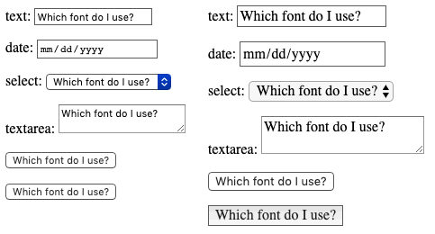

{{LearnSidebar}}{{PreviousMenuNext("Learn/Forms/Other_form_controls","Learn/Forms/Advanced_form_styling","Learn/Forms")}}
In the previous few articles we looked at all the HTML you'll need to create and structure your web forms. In this article we will move on to looking at how to use CSS to style your form controls. This has historically been difficult — form controls vary greatly in how easy they are to customize with CSS — but it is getting easier as old browsers are retired and modern browsers give us more features to use.
| Prerequisites: | Basic computer literacy, and a basic understanding of HTML and CSS. |
|---|---|
| Objective: | To understand the issues behind styling forms, and learn some of the basic styling techniques that will be useful to you. |
Form controls were added to HTML in the HTML 2 specification in 1995; CSS wasn't released until late 1996, and wasn't supported very well by browsers for a few years after that. Browsers relied on the underlying operating system to manage and render form controls.
And even with CSS available to style HTML, browser vendors have historically been reluctant to make form controls stylable because users were so accustomed to the visual appearance of their respective platforms. But this has changed. Website owners want form styles that fit in with their overall site design more than ever, and the web platform has changed to make this more possible.
For some form widgets, it is still difficult to rebuild controls to make them stylable, but we can now use CSS to style many form features, though we do need to take extra care to ensure we don't break usability.
At present, some difficulties remain when using CSS with forms. These problems can be divided into three categories:
Some elements can be styled with few if any problems across platforms. These include the following elements:
<input type="search">.Some elements are more difficult to style, requiring more complex CSS or some more specific tricks:
<input type="search">We describe how to handle these more specific features in the article Advanced form styling.
Some elements can't be styled thoroughly using CSS. These include:
<input type="color"><input type="datetime-local"><input type="range"><input type="file">Again, we'll describe what can be done in terms of styling these elements in Advanced form styling.
The real problem with all these controls is that they have a very complex structure, and beyond some basic styling (such as changing the width or margin of the control) you generally don't have the ability to style the controls' internal components (such as the date picker calendar, or the button on the <select> that causes the options list to display) making up those widgets.
If you want to thoroughly customize those widgets, you really have to create your own using HTML, CSS, and JavaScript. This is beyond the scope of the core form articles, but we do look at this in an advanced article How to build custom form controls.
Note: there are some proprietary CSS pseudo-elements available that allow you to style internal components of these form controls, such as {{cssxref('::-moz-range-track')}}, but these are not consistent across browsers, so can't be relied upon. We will mention these later as well.
To style form controls that are easy to style with CSS, you shouldn't face much if any difficulties, since they mostly behave like any other HTML element. We already looked at some simple form styling in Your first form, and the CSS building blocks module contains some useful form styling essentials too.
As well as the basic CSS tools covered above, we've also been provided with several selectors — UI pseudo-classes — that enable styling based on the current state of the UI. We cover these in detail in the next article, UI pseudo-classes.
We'll walk through an example at the end of this article to give you some more ideas on basic form control styling and placement. Before we do that however, we'd like to say a few words about specific aspects of form styling that are worth knowing about.
CSS font and text features can be used easily with any widget (and yes, you can use {{cssxref("@font-face")}} with form widgets). However, browser behavior is often inconsistent. By default, some widgets do not inherit {{cssxref("font-family")}} and {{cssxref("font-size")}} from their parents. Many browsers use the system default appearance instead. To make your forms' appearance consistent with the rest of your content, you can add the following rules to your stylesheet:
button, input, select, textarea {
font-family: inherit;
font-size: 100%;
}
The {{cssxref('inherit')}} property value causes the property value to match the computed value of the property of its parent element; inheriting the value of the parent.
The screenshots below show the difference. On the left is the default rendering of an <input type="text">, <input type="date">, {{htmlelement('select')}}, {{htmlelement('textarea')}}, <input type="submit">, and a <button> in Chrome on macOS, with the platform's default font style in use. On the right are the same elements, with our above style rule applied.

The defaults differed in a number of ways. Inheriting should change their fonts to that of the parent's font family — in this case the default serif font of the parent container. They all do, with a strange exception — <input type="submit"> does not inherit from the parent paragraph in Chrome. Rather, it uses the {{cssxref('font-family#Values', 'font-family: system-ui')}}. This is another reason to use <button> elements over their equivalent input types!
There's a lot of debate as to whether forms look better using the system default styles, or customized styles designed to match your content. This decision is yours to make, as the designer of your site, or web application.
All text fields have complete support for every property related to the CSS box model, such as {{cssxref("width")}}, {{cssxref("height")}}, {{cssxref("padding")}}, {{cssxref("margin")}}, and {{cssxref("border")}}. As before, however, browsers rely on the system default styles when displaying these widgets. It's up to you to define how you wish to blend them into your content. If you want to keep the native look and feel of the widgets, you'll face a little difficulty if you want to give them a consistent size.
This is because each widget has their own rules for border, padding and margin. To give the same size to several different widgets, you can use the {{cssxref("box-sizing")}} property along with some consistent values for other properties:
input, textarea, select, button {
width : 150px;
padding: 0;
margin: 0;
box-sizing: border-box;
}
In the screenshot below, the left column shows the default rendering of an <input type="radio">, <input type="checkbox">, <input type="range">, <input type="text">, <input type="date"> input, {{htmlelement('select')}}, {{htmlelement('textarea')}},<input type="submit">, and {{htmlelement('button')}}. The right column on the other hand shows the same elements with our above rule applied to them. Notice how this lets us ensure that all of the elements occupy the same amount of space, despite the platform's default rules for each kind of widget.
What may not be apparent via the screenshot is that the radio and checkbox controls still look the same, but they are centered in the 150px of horizontal space provided by the {{cssxref('width')}} property. Other browsers may not center the widgets, but they do adhere to the space allotted.
The {{HTMLElement("legend")}} element is okay to style, but it can be a bit tricky to control placement of it. By default it is always positioned over the top border of its {{HTMLElement("fieldset")}} parent, near the top left corner. To position it somewhere else, for example inside the fieldset somewhere, or near the bottom left corner, you need to rely on positioning.
Take the following example:
{{EmbedGHLiveSample("learning-area/html/forms/native-form-widgets/positioned-legend.html", '100%', 400)}}
To position the legend in this manner, we used the following CSS (other declarations removed for brevity):
fieldset {
position: relative;
}
legend {
position: absolute;
bottom: 0;
right: 0;
}
The <fieldset> needs to be positioned too, so that the <legend> is positioned relative to it (otherwise the <legend> would be positioned relative to the <body>.)
The {{HTMLElement("legend")}} element is very important for accessibility — it will be spoken by assistive technologies as part of the label of each form element inside the fieldset — but using a technique like the one above is fine. The legend contents will still be spoken in the same way; it is just the visual position that has changed.
Note: You could also use the {{cssxref("transform")}} property to help you with positioning your <legend>. However, when you position it with for example a transform: translateY();, it moves but leaves an ugly gap in the <fieldset> border, which is not easy to get rid of.
Let's look at a concrete example of how to style an HTML form. We will build a fancy-looking "postcard" contact form; see here for the finished version.
If you want to follow along with this example, make a local copy of our postcard-start.html file, and follow the below instructions.
The HTML is only slightly more involved than the example we used in the first article of this guide; it just has a few extra IDs and a heading.
<form>
<h1>to: Mozilla</h1>
<div id="from">
<label for="name">from:</label>
<input type="text" id="name" name="user_name">
</div>
<div id="reply">
<label for="mail">reply:</label>
<input type="email" id="mail" name="user_email">
</div>
<div id="message">
<label for="msg">Your message:</label>
<textarea id="msg" name="user_message"></textarea>
</div>
<div class="button">
<button type="submit">Send your message</button>
</div>
</form>
Add the above code into the body of your HTML.
This is where the fun begins! Before we start coding, we need three additional assets:
Your fonts need some more processing before you start:
.woff files and two .woff2 files; they might vary in the future.) Copy these files into a directory called fonts, in the same directory as before. We are using two different files for each font to maximise browser compatibility; see our Web fonts article for a lot more information.Now we can dig into the CSS for the example. Add all the code blocks shown below inside the {{htmlelement("style")}} element, one after another.
First, we prepare by defining our {{cssxref("@font-face")}} rules, and all the basic styles set on the {{HTMLElement("body")}} and {{HTMLElement("form")}} elements. If the fontsquirrel output was different to what we described above, you can find the correct @font-face blocks inside your downloaded webfont kit, in the stylesheet.css file (you'll need to replace the below @font-face blocks with them, and update the paths to the font files):
@font-face {
font-family: 'handwriting';
src: url('fonts/journal-webfont.woff2') format('woff2'),
url('fonts/journal-webfont.woff') format('woff');
font-weight: normal;
font-style: normal;
}
@font-face {
font-family: 'typewriter';
src: url('fonts/veteran_typewriter-webfont.woff2') format('woff2'),
url('fonts/veteran_typewriter-webfont.woff') format('woff');
font-weight: normal;
font-style: normal;
}
body {
font : 1.3rem sans-serif;
padding : 0.5em;
margin : 0;
background : #222;
}
form {
position : relative;
width : 740px;
height : 498px;
margin : 0 auto;
padding: 1em;
box-sizing: border-box;
background : #FFF url(background.jpg);
/* we create our grid */
display : grid;
grid-gap : 20px;
grid-template-columns : repeat(2, 1fr);
grid-template-rows : 10em 1em 1em 1em;
}
Notice that we've used some CSS Grid and Flexbox to lay out the form. Using this we can easily position our elements, including the title and all the form elements:
h1 {
font : 1em "typewriter", monospace;
align-self : end;
}
#message {
grid-row: 1 / 5;
}
#from, #reply {
display: flex;
}
Now we can start working on the form elements themselves. First, let's ensure that the {{HTMLElement("label")}}s are given the right font:
label {
font : .8em "typewriter", sans-serif;
}
The text fields require some common rules. In other words, we remove their {{cssxref("border","borders")}} and {{cssxref("background","backgrounds")}}, and redefine their {{cssxref("padding")}} and {{cssxref("margin")}}:
input, textarea {
font : 1.4em/1.5em "handwriting", cursive, sans-serif;
border : none;
padding : 0 10px;
margin : 0;
width : 80%;
background : none;
}
When one of these fields gains focus, we highlight them with a light grey, transparent, background (it is always important to have focus style, for usability and keyboard accessibility):
input:focus, textarea:focus {
background : rgba(0,0,0,.1);
border-radius: 5px;
}
Now that our text fields are complete, we need to adjust the display of the single and multiple line text fields to match, since they won't typically look the same using the defaults.
{{HTMLElement("textarea")}} elements default to being rendered as an inline-block element. The two important things here are the {{cssxref("resize")}} and {{cssxref("overflow")}} properties. While our design is a fixed-size design, and we could use the resize property to prevent users from resizing our multi-line text field, it is best to not prevent users from resizing a textarea if they so choose. The {{cssxref("overflow")}} property is used to make the field render more consistently across browsers. Some browsers default to the value auto, while some default to the value scroll. In our case, it's better to be sure every one will use auto:
textarea {
display : block;
padding : 10px;
margin : 10px 0 0 -10px;
width : 100%;
height : 90%;
border-right: 1px solid;
/* resize : none; */
overflow: auto;
}
The {{HTMLElement("button")}} element is really convenient to style with CSS; you can do whatever you want, even using pseudo-elements:
button {
padding : 5px;
font : bold .6em sans-serif;
border : 2px solid #333;
border-radius: 5px;
background : none;
cursor : pointer;
transform : rotate(-1.5deg);
}
button:after {
content : " >>>";
}
button:hover,
button:focus {
outline : none;
background : #000;
color : #FFF;
}
And voila! Your form should now look like this:

Note: If your example does not work quite like you expected and you want to check it against our version, you can find it on GitHub — see it running live (also see the source code).
You've reached the end of this article, but can you remember the most important information? You can find some further tests to verify that you've retained this information before you move on — see Test your skills: Styling basics.
As you can see, as long as we want to build forms with just text fields and buttons, it's easy to style them using CSS. In the next article, we will see how to handle form widgets which fall into the "bad" and "ugly" categories.
{{PreviousMenuNext("Learn/Forms/Other_form_controls","Learn/Forms/Advanced_form_styling","Learn/Forms")}}
{kind=link}